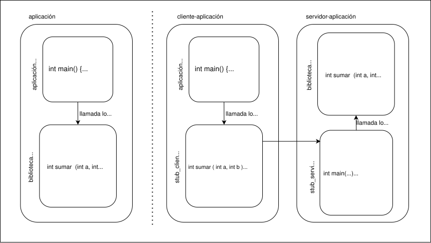
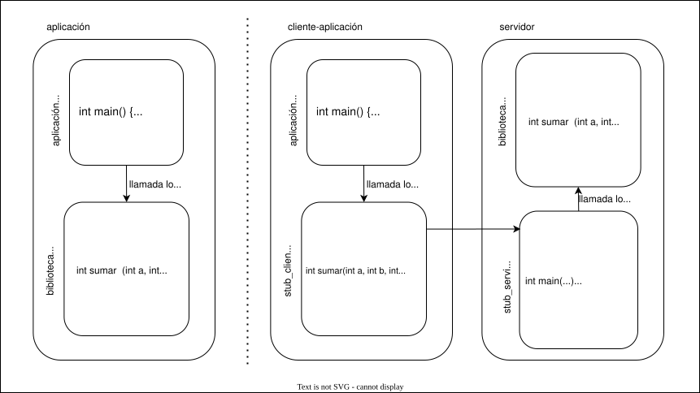
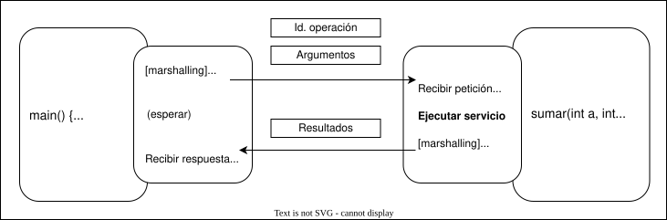
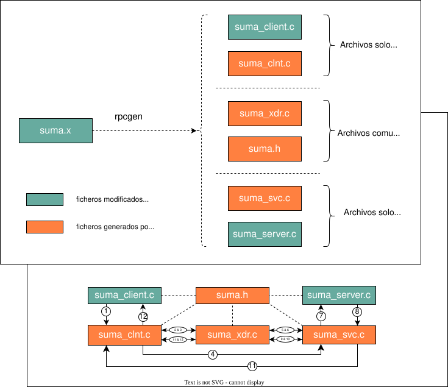
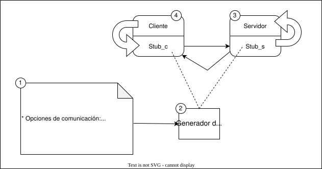
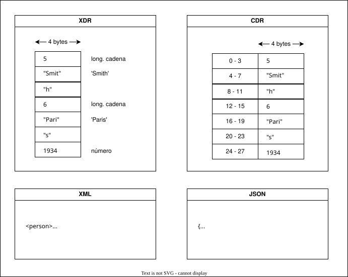

Comunicación con RPC
- Felix García Carballeira y Alejandro Calderón Mateos @ arcos.inf.uc3m.es

Contenidos
- Introducción a RPC
- Ejemplos de uso de RPC (Sun/ONC)
- Principales aspectos de las RPC
- Las RPC de Sun/ONC
Llamadas a procedimientos remotos: objetivo
- Objetivo: hacer que una aplicación distribuida se programe lo más igual posible que una aplicación no distribuida
- Mediante el modelo RPC se busca que la comunicación se realiza conceptualmente igual que una invocación de un procedimiento local.sequenceDiagram box Local Procedure Call participant ProcesoC end ProcesoC ->>+ ProcesoC: proc1(arg1, arg2) box Remote Procedure Call participant ProcesoA participant ProcesoB end ProcesoA ->>+ ProcesoB: proc1(arg1, arg2) ProcesoB ->>- ProcesoA: <br/>
- Mediante el modelo RPC se busca que la comunicación se realiza conceptualmente igual que una invocación de un procedimiento local.
- Hay dos ingredientes principales:
- Código de invocación remota lo más transparente posible.
- Generación del código de invocación remota lo más automatizada posible.
- Beneficio: la persona que desarrolla puede centrarse más en lo que hace su aplicación en lugar preocuparse de poner en marcha una plantilla inicial repetitiva.
- Por transparencia...
- Se simplifica las complejidades de las interacciones entre máquinas y espacios de direcciones.
- Se ofrece una interfaz de alto nivel para el movimiento de datos y comunicación.
- Por generación automatizada posible....
- Se simplifica muchos de los errores que pueden surgir de las interacciones de comunicación/transmisión de bajo nivel, liberando al desarrollador de tener que reimplementar explícitamente el manejo de errores en cada programa.
- Por transparencia...
(1/2) Transparencia de invocación remota
Uno de los ingredientes es la transparencia de la invocación remota: se busca que código de invocación remota lo más transparente posible, de manera que se parezca a una invocación a una función local.
En el siguiente ejemplo se muestra la forma de acercar esta transparencia:
- A la izquierda se muestra los elementos de una aplicación no distribuida con llamada local a la función de sumar.
- A la derecha se muestra la misma aplicación con una llamada remota a la función de sumar:
- Sigue estando
aplicación.cybiblioteca.c. Se añadestub_cliente.cystub_servidor.c - El código del
stub_clientey delstub_servidoroculta a la función "main(...)" los detalles de que la ejecución es remota. - El componente
bibliotecade la aplicación pasa a estar en otro proceso, y se comunican usando colas POSIX en este ejemplo.

- Sigue estando
(2/2) Generación automática
El otro ingrediente es la generación lo más automatizada posible del código de invocación remota, es decir, que el
stub_servidorystub_clientese pueda obtener de forma automática a partir de la definición de la interfaz de las funciones remotas (sumar, etc. para el ejemplo anterior)De esta forma:
- Se garantiza que el código generado que sirve de plantilla inicial se base en una gramática que puede validarse (y con ello asegurar que el código funcione).
- Se facilita la generación de nuevas aplicaciones distribuidas así como transformar aplicaciones existentes a distribuidas
Breve historia de las RPC
- RPC (Remote Procedure Call): llamadas a procedimientos remotos
- Por Birrell y Nelson (1985) en "Implementing Remote Procedure Calls"
- Híbrido:
- Llamadas a procedimientos
- Paso de mensajes
- Las RPC constituyen el núcleo de muchos sistemas distribuidos
- Llegaron a su culminación con DCE (Distributed Computing Environment)
- Han evolucionado a invocación de métodos remotos (CORBA, RMI) e invocación de servicios (Web Services)
Estructura de las RPC
Las RPC ofrecen una interfaz sencilla para construir aplicaciones distribuidas sobre TCP/IP

De forma general, los elementos que participan son:
- Un cliente activo, que realiza una RPC al servidor
- El stub_cliente realiza una comunicación cliente/servidor, enviando una petición al stub_servidor
- En la petición del cliente se envía un mensaje que contiene, al menos, el código de operación y los argumentos.
Un servidor pasivo, que realiza el servicio y devuelve el resultado de la RPC al cliente
- El stub_servidor responde a la petición del cliente
- En la respuesta al cliente se envía un mensaje que contine, al menos, el resultado de la función invocada.

- Un cliente activo, que realiza una RPC al servidor
Conceptos básicos:
- Un servicio de red es una colección de uno o más programas remotos
- Un programa remoto implementa uno o más procedimientos remotos
- Un procedimiento remoto, sus parámetros y sus resultados se especifican en un fichero de especificación del protocolo escrito en un lenguaje de especificación de interfaces (IDL)
- Un servidor puede soportar más de una versión de un programa remoto
- Permite al servidor ser compatible con las actualizaciones del servicio
- Un suplente (stub o proxy) es responsable de convertir los parámetros y resultados durante el procedimiento remoto, además de enviar y recibir dichos valores mediante mensajes.
- Los suplentes (stub_cliente y stub_servidor) son independientes de la implementación que se haga del servidor.
- Son dependientes de la interfaz del servicio
- Se generan automáticamente por el software de RPC
Desarrollando con las RPC
Se supone que las herramientas necesarias están ya instaladas, por ejemplo: RPC en Ubuntu
Los principales paso para desarrollar con RPC son:
Definir la interfaz de servicio un lenguaje de definición de interfaces (IDL):
- Hay que definir cada operación, sus argumentos de entrada y salida, así como sus resultados
Ejemplo: suma.x
program SUMAR { version SUMAVER { int SUMA ( int a, int b ) = 1; } = 1; } = 99;Compilación de la interfaz IDL para generar los archivos encargados de las comunicaciones en cliente y servidor:
- A partir de la descripción de la interfaz del servicio en IDL, la utilidad rpcgen genera de forma automática distintos archivos.
Ejemplo: uso de rpcgen
rpcgen -N -M -a suma.xOpciones comunes son:
* **-N** para procedimientos con múltiples argumentos. * **-M** para codigo que pueda ser usado por varios hilos. * **-a** para que genere todos los ficheros, incluido un Makefile de plantilla para la compilación.Los archivos generados son tanto los relacionados con la comunicación como los archivos con una plantilla que el/la programador/a ha de rellenar con la implementación y uso del servicio:
- Archivos comunes en el lado del cliente y del servidor: suma_xdr.c y suma.h
- En el lado del servidor: suma_svc.c y suma_server.c (este último ha de cambiarse con la implementación de la interfaz del servicio)
- En el lado del cliente: suma_clnt.c y suma_client.c (este último ha de cambiarse con la implementación del cliente que usará el servicio)

Se implementa el servicio en el lado del servidor.
- Se cambia el contenido de las funciones generadas en sumar_server.c por el dado a continuación.
Ejemplo: suma_server.c
#include "suma.h" bool_t suma_1_svc ( int a, int b, int *result, struct svc_req *rqstp ) { *result = a + b; // código a añadir return 1; // 1 -> resultado ok } int sumar_1_freeresult ( SVCXPRT *transp, xdrproc_t xdr_result, caddr_t result ) { xdr_free (xdr_result, result); return 1; }Se implementación el cliente que hace uso de la interfaz en el lado del cliente.
- Se cambia todo el contenido generado en sumar_client.c por dado a continuación.
- En el ejemplo de sumar_cliente.c dado, para la función main la función sumar_1 es una llamada local, aunque internamente suponga el uso de un servicio remoto.
Ejemplo: suma_client.c
#include "suma.h" char *host = NULL ; int sumar_1 ( int a, int b ) ; int main ( int argc, char *argv[] ) { if (argc < 2) { printf ("Uso: %s\n", argv[0]); exit (-1); } host = argv[1] ; int ret = sumar_1(1, 2); printf("Resultado de %d + %d es %d\n", 1, 2, ret) ; return 0 ; } int sumar_1 ( int a, int b ) { CLIENT *clnt ; enum clnt_stat retval ; int result ; clnt = clnt_create (host, SUMAR, SUMAVER, "tcp"); if (clnt == NULL) { clnt_pcreateerror (host); exit (-1); } retval = suma_1(a, b, &result, clnt); if (retval != RPC_SUCCESS) { clnt_perror (clnt, "call failed"); } clnt_destroy (clnt); return result ; } Se compila y genera los ejecutables en el lado del cliente y del servidor.
Ejemplo: compilación individual
gcc -g -D_REENTRANT -I/usr/include/tirpc -o suma_xdr.o -c suma_xdr.c gcc -g -D_REENTRANT -I/usr/include/tirpc -o suma_clnt.o -c suma_clnt.c gcc -g -D_REENTRANT -I/usr/include/tirpc -o suma_client.o -c suma_client.c gcc -g -D_REENTRANT -I/usr/include/tirpc -o suma_svc.o -c suma_svc.c gcc -g -D_REENTRANT -I/usr/include/tirpc -o suma_server.o -c suma_server.c gcc -g -D_REENTRANT -o suma_server suma_svc.o suma_server.o suma_xdr.o -lpthread -ltirpc gcc -g -D_REENTRANT -o suma_client suma_clnt.o suma_client.o suma_xdr.o -lpthread -ltirpc- NOTA 1: mucho cuidado con "make -f Makefile.suma clean" puesto que por defecto borra suma_server.c y suma_client.c, perdiendo el trabajo realizado en dichos ficheros.
- NOTA 2: este ejemplo se basa en usar la librería
tirpcen Linux (Debian/Ubuntu), puede que en otro sistema no sea necesaria o sea otra librería. - NOTA 3: en este ejemplo puede ser también necesaria la librería
-lnsl
Para la ejecución hay que primero ejecutar el servidor y luego el cliente.
Ejemplo: ejecución del servidor
acaldero@docker1:~/sd$ ./suma_server & acaldero@docker1:~/sd$ rpcinfo -p localhost program vers proto port service 100000 4 tcp 111 portmapper 100000 3 tcp 111 portmapper 100000 2 tcp 111 portmapper 100000 4 udp 111 portmapper 100000 3 udp 111 portmapper 100000 2 udp 111 portmapper 99 1 udp 34654 99 1 tcp 41745Ejemplo: ejecución del cliente en la misma máquina usando localhost:
acaldero@docker1:~/sd$ ./suma_client localhost Resultado de 1 + 2 es 3 acaldero@docker1:~/sd$ kill -9 %1 acaldero@docker1:~/sd$ sudo rpcinfo -d 99 1 [1]+ Killed ./suma_serverEjemplo: detener la ejecución del servidor y dar de baja el servicio
acaldero@docker1:~/sd$ kill -9 %1 acaldero@docker1:~/sd$ sudo rpcinfo -d 99 1 [1]+ Killed ./suma_server
Lenguaje IDL
Un Lenguaje de Definición de Interfaz (IDL) permite especificar una interfaz:
- Nombre de servicio que utilizan los clientes y servidores
- Nombres de procedimientos
- Parámetros de los procedimientos
- Entrada
- Salida
- Tipos de datos de los argumentos.
- Puede incluir opciones de comunicación.
La interfaz es compartida por cliente y servidor.
Los compiladores pueden diseñarse para que los clientes y servidores se escriban en lenguajes diferentes

Programación con un paquete de RPC:
- El programador debe proporcionar:
- La definición de la interfaz (IDL)
- Nombres de los procedimientos
- Parámetros que el cliente pasa al servidor
- Resultados que devuelve el servidor al cliente
- El código del cliente
- El código del servidor
- La definición de la interfaz (IDL)
- El compilador de IDL genera :
- El suplente (stub) del cliente
- El suplente (stub) del servidor
- Puede generar una librería auxiliar para hacer el marshalling/unmarshalling en los suplentes
- El programador debe proporcionar:
Aplanamiento (marshalling)
Los parámetros son aplanados (marshalling) para resolver los problemas en la representación de los datos:
- Servidor y cliente pueden ejecutar en máquinas con arquitecturas distintas (número bits, ordenamiento de bytes, etc.)
- No es posible enviar un puntero dado que cliente y servidor tienen un espacio de direcciones distinto.
Posibles esquemas de representación de datos:
- XDR (eXternal Data Representation) es un estándar que define la representación de tipos de datos (RFC 1832)
- CDR es la representación común de datos de CORBA.
- XML (eXtensible Markup Language) es un metalenguaje basado en etiquetas definida por W3C
- JSON (JavaScript Object Notation) formato de texto ligero para el intercambio de datos.
Ejemplo: 'Smith', 'Paris', 1934

Localización y enlazado (binding)
Servicio de enlace: servicio que permite establecer la asociación entre el cliente y el servidor:
- Implica localizar al servidor que ofrece un determinado servicio
- El servidor debe registrar su dirección en un servicio de nombres gestionado por un servidor de enlazado dinámico (binder)
El enlazador dinámico (binder) es el servicio que mantiene una tabla de traducciones entre nombres de servicio y direcciones. Incluye funciones para:
- Registrar un nombre de servicio
- Eliminar un nombre de servicio
- Buscar la dirección correspondiente a un nombre de servicio
- Cómo localizar al enlazador dinámico:
- Ejecuta en una dirección fija de un computador fijo
- El sistema operativo se encarga de indicar su dirección
- Difundiendo un mensaje (broadcast) cuando los procesos comienzan su ejecución.
Los pasos para el registro y enlace son:
- Servidor obtiene dirección
- Registra dirección
- Busca servidor
- Devuelve dirección
- Petición
- Respuesta
Borra dirección (fin del servicio)
flowchart subgraph id1 [ ] A["Cliente"] B["Servidor"] C["Binder"] end B --->|"(2)"| C B --->|"(7)"| C A --->|"(3)"| C C --->|"(4)"| A A --->|"(5)"| B B --->|"(6)"| A B -.->|"(1)"| B
Tipos de fallos que pueden aparecer con las RPC
- El cliente no es capaz de localizar al servidor
- Posibles soluciones:
- Revisar si servidor caído
- Revisar que no se use una versión antigua del servidor
- Posibles soluciones:
- Pérdidas de mensajes
- Se pierde el mensaje de petición del cliente al servidor
- Posible solución:
- Se activa un temporizador después de enviar el mensaje y si no hay respuesta se retransmite el mensaje.
- Posible solución:
- Se pierde el mensaje de respuesta del servidor al cliente
- Posibles soluciones:
- Si es una operación idempotente (se pueden repetir y devuelven el mismo resultado) no hay problema.
- Con operación no idempotente hay que descartar las peticiones ya ejecutadadas: hay que añadir un número de secuencia y un campo para indicar si es original o retransmisión en el cliente y guardar un histórico de las peticiones anteriores y su respuesta para no ejecutar de nuevo en el servidor.
- Posibles soluciones:
- Se pierde el mensaje de petición del cliente al servidor
- El servidor falla después de recibir una petición
- Posibles soluciones:
- No garantizar nada
- Semántica al menos una vez: reintentar y garantizar que la RPC se realiza al menos una vez (cuidado con operaciones no idempotentes)
- Semántica a lo más una vez: no reintentar, puede que no se realice ni usa sola vez
- Semántica de exactamente una
- Posibles soluciones:
- El cliente falla después de enviar una petición
- Posible solución:
- Disponer de la posibilidad de cancelar una operación en curso.
- Posible solución:
Características que definen una RPC
Tipos de IDL:
- Integrado con un lenguaje de programación (Cedar, Argus, RMI de Java)
- Lenguaje de definición de interfaces específico para describir las interfaces entre los clientes y los servidores (RPC de Sun/ONC, RPC de DCE, CORBA, Google RPC)
Tipos de parámetros:
- Parámetro de entrada (in)
- El parámetro se envía del cliente al servidor
- Parámetro de salida (out)
- El parámetro se envía del servidor al cliente
Parámetro de entrada/salida (inout)
- El parámetro se envía tanto del cliente al servidor como luego del servidor al cliente
Modelos de RPC
- RPC síncronas: petición y respuesta
- RPC asíncronas: solo petición
- El cliente no espera la respuesta
- No admite parámetros de salida
- Ejemplo en CORBA: métodos oneway
Posibles esquemas de representación de datos:
- XDR (eXternal Data Representation)
- CDR es la representación común de datos de CORBA.
- XML (eXtensible Markup Language) es un metalenguaje basado en etiquetas definida por W3C
- JSON (JavaScript Object Notation) formato de texto ligero para el intercambio de datos.
Tipos de conversión de datos:
- Conversión de datos asimétrica:
- El cliente convierte a la representación de datos del servidor
- Conversión de datos simétrica:
- El cliente y el servidor convierten a una representación de datos estándar
- ONC-RPC utiliza representación de datos simétrica
- Conversión de datos asimétrica:
Tipos de tipados:
- Tipado explícito:
- Cada dato enviado incluye el valor y su tipo
- Tipado implícito:
- Cada dato enviado solo incluye el valor, no se incluye el tipo
- ONC-RPC utiliza tipado implícito
- Cada dato enviado solo incluye el valor, no se incluye el tipo
- Tipado explícito:
- Parámetro de entrada (in)
Tipos de enlace:
- Enlace no persistente: el enlace entre cliente y servidor se estable en cada RPC
- Más tolerante a fallos
- Permite migración de servicios
- Enlace persistente: el enlace se mantiene después de la primera RPC
- Mejor rendimiento en aplicaciones con muchas RPC repetidas
- Problemas si los servidores cambian de lugar
- Modelos híbridos
Tipos de indicaciones de error:
- Devolver un código de error (-1 / NULL) o el valor de salida
- A evitar: que el código de error está dentro del rango de posibles valores de salida, como por ejemplo -1 para
sumar(a,b)
- A evitar: que el código de error está dentro del rango de posibles valores de salida, como por ejemplo -1 para
- Elevar una excepción
- Precisa un lenguaje que tenga excepciones
- Devolver dos valores: el estado de la operación (OK / KO) y el valor de salida
- Mejor aunque resta transparencia:
int res = sumar(a,b, &status)
- Mejor aunque resta transparencia:
- Devolver un puntero al valor:
- Si el puntero es NULL es que hay error y no hay valor válido.
- Si el puntero no es NULL entonces al acceder a dicho puntero se tiene el valor buscado.
- Para entornos multi-hilo puede que el puntero apunte a una memoria dinámica que tras su uso hay que liberar.
- Devolver un código de error (-1 / NULL) o el valor de salida
Estrategias ante fallos:
- Cliente RPC
- Reenviar petición tras temporizador
- Incluir identificador de petición (número de secuencia)
- Servidor RPC
- Analizar número de secuencia para filtrar peticiones duplicadas (guardar histórico y no ejecutar de nuevo peticiones repetidas)
- Ofrecer semántica:
- No garantizar nada
- Al menos una vez: reintentar y garantizar que la RPC se realiza al menos una vez (cuidado con operaciones no idempotentes)
- A lo más una vez: no reintentar, puede que no se realice ni usa sola vez
- Exactamente una
- Cliente RPC
Tipos de protocolos usado:
- ¿El protocolo es orientado a conexión?
- Orientado a conexión
- No orientado a conexión
- ¿El protocolo está estandarizado?
- Estándar (por ejemplo TCP o UDP)
- Específico (no estándard)
- ¿El protocolo es orientado a conexión?
- Enlace no persistente: el enlace entre cliente y servidor se estable en cada RPC
RPC de Sun/ONC
Breve historia:
- Diseñado inicialmente para el sistema de ficheros NFS
- Descrito en RFC 1831
- También se denomina ONC-RPC (Open Network Computing)
Características:
- Se puede usar tanto UDP como TCP
- Cliente y servidor deben estar de acuerdo en el protocolo de transporte a utilizar
- Semántica al menos una vez
- Lenguaje de definición de interfaces XDR
- Tipado implícito
- Representación de datos simétrica
- Incluye:
- Un generador de suplentes (stubs) llamado rpcgen
- Bibliotecas de funciones de soporte de las RPC (
) - Servicio de registro de procedimientos (portmapper o rpcbind)
- Se puede usar tanto UDP como TCP
Soporte:
- Para C en UNIX/Linux, Windows, etc.
- Para Java
XDR para Sun/ONC
XDR (eXternal Data Representation) es un estándar que define la representación de tipos de datos (RFC 1832)
- Utilizado inicialmente para representaciones externas de datos
- Se extendió a lenguajes de definición de interfaces
Principales características de XDR:
- Utiliza representación big-endian
- No utiliza protocolo de negociación
- Todos los elementos en XDR son múltiplos de 4 bytes
- La transmisión de mensajes utiliza tipado implícito (el tipo de datos no viaje con el valor)
- Utiliza conversión de datos simétrica
- Los datos se codifican en un flujo de bytes
- Gestión de memoria: las RPC no reservan memoria dinámica.
- Si los argumentos de entrada y/o salida usan memoria dinámica entonces:
- El servidor puede tener que reservar memoria e implementarse el xxx_freeresult(...) correspondiente.
- El cliente puede tener que reservar memoria antes de invocar a la RPC y liberar luego con xdr_free(...)
- Si los argumentos de entrada y/o salida usan memoria dinámica entonces:
IDL: formato base
Ejemplos de definición de interfaz:
- Con un parámetro de entrada y un parámetro de salida:
struct args { int a; int b; }; struct res { int r; }; program SUMAR { version SUMAVER { struct res SUMA (struct args a) = 1; // 1 es el número de procedimiento struct res RESTA (struct args a) = 2; } = 1; // 1 es el número de versión } = 99; // 99 es el número de programa - Con múltiples argumentos (precisa rpcgen con al menos la opción -N):
program SUMAR { version SUMAVER { int SUMA (int a, int b) = 1; // 1 es el número de procedimiento int RESTA (int a, int b) = 2; } = 1; // 1 es el número de versión } = 99; // 99 es el número de programa
Una definición interfaz puede contener:
- Definición de tipos de datos al principio del archivo:
struct res { int status; int value; }; ... - Un conjunto de procedimientos remotos (a continuación de toda definición de tipos):
... program SUMAR { version SUMAVER { struct res SUMA (int a, int b) = 1; } = 1; } = 99;- Cada procedimiento remoto se identifica unívocamente mediante tres campos (NUM-PROG, NUM-VERSION, NUM-PROCEDURE) codificados con enteros sin signo:
- NUM-PROG es el número de programa remoto.
- Se definen en la RFC 1831 (http://www.ietf.org/rfc/rfc1831.txt)
0x00000000 - 0x1fffffff--> definido por Sun0x20000000 - 0x3fffffff--> definido por usuario/a0x40000000 - 0x5fffffff--> transitorio0x60000000 - 0xffffffff--> reservado
- Para los laboratorios se recomienda usar el NIA de uno de los integrantes del grupo para evitar interferir con los servicios de otros grupos.
- Se definen en la RFC 1831 (http://www.ietf.org/rfc/rfc1831.txt)
- NUM-VERSION es el número de versión de programa.
- La primera implementación (versión) debe ser la 1.
- Cada vez que se hace un cambio en la interfaz IDL (se añaden/quitan/modifican procedimientos) se incrementa la versión.
- NUM-PROCEDURE es el número de procedimiento remoto.
- Los especifica el/la programador/a, y han de ser diferente para cada procedimiento.
- NUM-PROG es el número de programa remoto.
- Los parámetros de entrada:
- Por defecto (sin usar la opción -N en rpcgen), los procedimientos sólo aceptan un parámetro de entrada.
- Si hay más un un parámetro entonces es posible bien encapsular todos los parámetros en una estructura y pasar dicha estructura o bien se usa la opción -N de rpcgen
- Pasar un puntero no tiene sentido puesto que apunta al espacio de direcciones local y a una zona arbitraria de datos en espacio remoto. Para resolver este problema un sistema RPC puede:
- Prohibir el uso de punteros como argumentos.
- Permitir el uso de punteros, pero asegurarando de que lo que se transmite son los datos referenciados por el puntero y no el puntero en sí mismo.
- Es posible que no se puede pasar un array/vector de tamaño fijo,
por ejemplo:
pero puede ser posible en su lugar usar una estructura que contenga un campo que sea un array/vector de tamaño fijo, por ejemplo:int rutina_no_valida ( int arg[32] );struct arr_double_struct { double vector[32]; } ; int rutina_valida ( struct arr_double arg );
- Los parámetros de salida:
- La función devuelve un único resultado (del tipo indicado a la izquierda del nombre de la función).
- Si hay que devolver más, es posible definir una estructura que contenga todos los valores a devolver y devolver dicha estructura.
- Los parámetros de entrada y salida:
- Es común que NO haya parámetros de entrada y luego salida a la vez en la definición IDL.
- Para simular un parámetro de entrada y salida hay que usar 2 parámetros en la definición IDL: uno de entrada (como un parámetro de entrada adicional) y uno de salida (que se une al resto de parámetros de salida que la función tenga que devolver).
- Cada procedimiento remoto se identifica unívocamente mediante tres campos (NUM-PROG, NUM-VERSION, NUM-PROCEDURE) codificados con enteros sin signo:
IDL: notación XDR usada
La notación XDR para los principales elementos es:
Elemento En XDR Traducción a C Constantes const MAX_SIZE = 8192;
#define MAX_SIZE 8192
Tipos básicos Entero con signo int a;
int a;
Entero sin signo unsigned a;
unsigned int a;
Coma flotante float a; double c;
float a; double c;
Colecciones mismo tipo Cadena de longitud fija (1) string a<37>;
char *a;
Cadena de longitud variable string b<>;
struct { u_int b_len; char *b_val; } b ;Vectores de tamaño fijo int a[12];
int a[12];
Vectores de tamaño variable int d<>; int d<MAX>;
struct { u_int d_len; char *d_val; } d ;Array de bytes (tamaño fijo) opaque a[20];
char a[20];
Array de bytes (tamaño variable) opaque b<>;
struct { u_int b_len; char *b_val; } b ;Colecciones distinto tipo Estructuras struct punto { int x; int y; };struct punto { int x; int y; }; typedef struct punto punto; bool_t xdr_punto (XDR *, punto*);Uniones union resultado switch (int error) { case 0: int n; default: void; } ;struct resultado { int error; union { int n; } resultado_u ; } ; typedef struct resultado resultado; bool_t xdr_resultado (XDR *, resultado*);Nuevos tipos Enumerados enum color { ROJO = 0, VERDE = 1, AZUL = 2 };enum color { ROJO = 0, VERDE = 1, AZUL = 2 }; typedef enum color color; bool_t xdr_color (XDR *, color*);Definición de tipos nuevos typedef punto puntos[2];
typedef punto puntos[2];
Lista enlazada struct lista { int x; lista *next; }struct lista { int x; lista *next; }
- NOTA(1): al transmitir por red, se envía primero la longitud (37) y luego la secuencia de caracteres ASCII.
El proceso rpcbind/portmapper
- El enlace en ONC-RPC se realiza mediante un proceso denominado rpcbind (portmapper).
- Soporta TCP y UDP
- Funcionamiento básico:
- En cada ordenador se ejecuta un proceso rpcbind en un puerto bien conocido (111)
- Cuando un servidor arranca, registra el servicio en el rpcbind local del computador en el que ejecuta.
- El rpcbind almacena por cada servicio local:
- El número de programa
- El número de versión
- El número de puerto
- Cuando un cliente necesita invocar un procedimiento remoto, envía al rpcbind del host remoto (necesita conocer la dirección IP del servidor)
- El número de programa y el número de versión
- El proceso rpcbind devuelve el puerto del servidor en esa máquina.
- Enlace dinámico:
- El número de puertos disponibles es limitado y el número de programas remotos potenciales puede ser muy grande
- Sólo el rpcbind ejecutará en un puerto determinado (111) y los números de puertos donde escuchan los servidores se averiguan preguntando al rpcbind
- Se puede usar el mandato
rpcinfopara consultar los servicios registrados:acaldero@docker1:~$ rpcinfo -p localhost program vers proto port service 100000 4 tcp 111 portmapper 100000 3 tcp 111 portmapper ... 100005 1 udp 42264 mountd 100005 1 tcp 48921 mountd 100005 2 udp 33964 mountd ... 100021 4 udp 47609 nlockmgr 100021 1 tcp 42741 nlockmgr 100021 3 tcp 42741 nlockmgr 100021 4 tcp 42741 nlockmgr 99 1 udp 46936 99 1 tcp 40427
Biblioteca de funciones rpc.h
Crear un manejador para el cliente:
CLIENT * clnt_create ( const char *host, const u_long prognum, const u_long versnum, const char *nettype )- Argumentos:
- host: nombre del host remoto donde se localiza el programa remoto
- prognum: número de programa del programa remoto
- versnum: número de versión del programa remoto
- nettype: protocolo de transporte: NETPATH, VISIBLE, CIRCUIT_V, DATAGRAM_V, CIRCUIT_N, DATAGRAM_N, TCP, UDP
- Argumentos:
Destruir el manejador del cliente:
void clnt_destroy ( CLIENT *clnt ) ;- Argumentos:
- clnt: manejador de RPC del cliente (anteriormente creado con clnt_create)
- Argumentos:
Indicar el error en un fallo de RPC:
void clnt_perror ( CLIENT *clnt, char *s ) ; void clnt_pcreateerror ( CLIENT *clnt, char *s ) ;- Argumentos:
- clnt: manejador de RPC del cliente
- s: mensaje de error
- Argumentos:
Notación usada en el código generado por rpcgen
A partir de la definición de PROCEDIMIENTO en el archivo .x como por ejemplo:
struct res { int a ; int b ; } ; program PROGRAM { version PROGRAM_VER { struct res PROCEDIMIENTO ( int a, char b ) = 1 ; } = 1 ; } = 0x1001010 ;Al ejecutar rpcgen con la opción de múltiples argumentos (normalmente -N) se genera:
En el lado del servidor, prototipo de un procedimiento remoto a implementar:
bool_t procedimiento_1_svc ( int arg1, char arg2, struct res *result, struct svc_req *rqstp );- Donde:
- Nombre de la función a implementar: procedimiento_1_svc
- se parte de PROCEDIMIENTO...
- ...se pasa todo a minúsculas...
- ...seguido de "_", seguido de la versión (1 en este ejemplo) y seguido de "_svc"
- Argumentos: int a, int b, struct res *result, struct svc_req *rqstp
- argumentos en el IDL
- si función devuelve un valor entonces:
- puntero al tipo de datos del valor de retorno del IDL
- parámetro extra de tipo "struct svc_req *rstp" que contiene información de la petición
- Valor retorno: boot_t
- 1 (TRUE) si ha ido bien y 0 (FALSE) para indicar error temporal
- Nombre de la función a implementar: procedimiento_1_svc
- Donde:
En el lado del cliente, prototipo de un procedimiento remoto a adaptar:
enum clnt_stat procedimiento_1 ( int a, char b, struct res *res, CLIENT *clnt );- Donde:
- Nombre de la función: procedimiento_1
- se parte de PROCEDIMIENTO...
- ...se pasa todo a minúsculas...
- ...seguido de "_" seguido de la versión (1 en este ejemplo)
- Argumentos: int a, char b, struct res *ret, CLIENT *clnt
- argumentos en el IDL
- si función devuelve un valor entonces:
- puntero al tipo de datos del valor de retorno del IDL
- parámetro extra de tipo "CLIENT *" que representa el manejador de un cliente RPC
- Valor retorno: enum clnt_stat
- RPC_SUCCESS si ha ido bien
- Nombre de la función: procedimiento_1
- Donde:
Calculadora remota
En el proceso de desarrollo de un procedimiento remoto que devuelve la suma o resta de dos enteros que se le pasan como parámetros, los pasos a seguir son:
Crear el archivo de interfaz calc.x
calc.x
program SUMAR { version SUMAVER { int SUMA ( int a, int b ) = 1; int RESTA ( int a, int b ) = 2; } = 1; } = 999;Hay que usar rpcgen con calc.x:
rpcgen -N -M -a calc.xHay que editar calc_server.c y añadir el código de los servicios a ser invocados de forma remota:
calc_server.c
#include "calc.h" bool_t suma_1_svc ( int a, int b, int *result, struct svc_req *rqstp ) { *result = a + b ; return TRUE ; } bool_t resta_1_svc ( int a, int b, int *result, struct svc_req *rqstp ) { *result = a - b ; return TRUE ; } int sumar_1_freeresult (SVCXPRT *transp, xdrproc_t xdr_result, caddr_t result) { xdr_free (xdr_result, result); return 1; }Hay que editar calc_client.c y cambiar el código inicial de ejemplo que usa los servicios remotos con el deseado.
calc_client.c
#include "calc.h" int sumar ( char *host, int a, int b ) { int ret ; CLIENT *clnt; enum clnt_stat retval_1; clnt = clnt_create (host, SUMAR, SUMAVER, "tcp"); if (clnt == NULL) { clnt_pcreateerror (host); exit (-1); } retval_1 = suma_1(a, b, &ret, clnt); if (retval_1 != RPC_SUCCESS) { clnt_perror (clnt, "call failed"); exit (-1); } clnt_destroy (clnt); return ret ; } int restar ( char *host, int a, int b ) { int ret ; CLIENT *clnt; enum clnt_stat retval_1; clnt = clnt_create (host, SUMAR, SUMAVER, "tcp"); if (clnt == NULL) { clnt_pcreateerror (host); exit (-1); } retval_1 = resta_1(a, b, &ret, clnt); if (retval_1 != RPC_SUCCESS) { clnt_perror (clnt, "call failed"); exit (-1); } clnt_destroy (clnt); return ret ; } int main ( int argc, char *argv[] ) { int res ; if (argc < 2) { printf ("usage: %s server_host\n", argv[0]); exit (1); } res = sumar(argv[1], 1, 2) ; printf("1 + 2 = %d\n", res) ; res = restar(argv[1], 1, 2) ; printf("1 - 2 = %d\n", res) ; return 0; }Compilar el ejemplo con:
make -f Makefile.calcDicho proceso de compilación suele suponer los siguientes pasos:
gcc -g -D_REENTRANT -I/usr/include/tirpc -o calc_xdr.o -c calc_xdr.c gcc -g -D_REENTRANT -I/usr/include/tirpc -o calc_clnt.o -c calc_clnt.c gcc -g -D_REENTRANT -I/usr/include/tirpc -o calc_client.o -c calc_client.c gcc -g -D_REENTRANT -I/usr/include/tirpc -o calc_svc.o -c calc_svc.c gcc -g -D_REENTRANT -I/usr/include/tirpc -o calc_server.o -c calc_server.c gcc -g -D_REENTRANT -o calc_server calc_svc.o calc_server.o calc_xdr.o -lnsl -lpthread -ltirpc gcc -g -D_REENTRANT -o calc_client calc_clnt.o calc_client.o calc_xdr.o -lnsl -lpthread -ltirpc- NOTA 1: mucho cuidado con "make -f Makefile.calc clean" puesto que por defecto borra calc_server.c y calc_client.c perdiendo el trabajo realizado en dichos ficheros.
- NOTA 2: este ejemplo se basa en usar la librería
tirpcen Linux (Debian/Ubuntu), puede que en otro sistema no sea necesaria o sea otra librería. - NOTA 3: en este ejemplo puede ser también necesaria la librería
-lnsl
Para la ejecución de la aplicación distribuida hay que primero ejecutar el servidor, y luego el cliente.
En una misma máquina, se puede usar como nombre de host localhost:
acaldero@docker1:~/sd$ ./calc_server & acaldero@docker1:~/sd$ rpcinfo -p localhost program vers proto port service 100000 4 tcp 111 portmapper 100000 3 tcp 111 portmapper 100000 2 tcp 111 portmapper 100000 4 udp 111 portmapper 100000 3 udp 111 portmapper 100000 2 udp 111 portmapper 999 1 udp 34654 999 1 tcp 41745 acaldero@docker1:~/sd$ ./calc_client localhost 1 + 2 = 3 1 - 2 = -1 acaldero@docker1:~/sd$ kill -9 %1 acaldero@docker1:~/sd$ sudo rpcinfo -d 99 1 [1]+ Killed ./calc_serverSi funciona en una misma máquina, se puede probar en dos máquinas (docker1 para calc_server y docker2 para calc_client):
docker1 docker2 ```bash docker1:~/sd$ ./calc_server & ``` ```bash docker2:~/sd$ rpcinfo -p docker1 program vers proto port service 100000 4 tcp 111 portmapper 100000 3 tcp 111 portmapper 100000 2 tcp 111 portmapper 100000 4 udp 111 portmapper 100000 3 udp 111 portmapper 100000 2 udp 111 portmapper 999 1 udp 34654 999 1 tcp 41745 @docker2:~/sd$ ./calc_client docker1 1 + 2 = 3 1 - 2 = -1 ``` ```bash docker1:~/sd$ kill -9 %1 docker1:~/sd$ sudo rpcinfo -d 999 1 [1]+ Killed ./calc_server ```
Cadena de caracteres
En el proceso de desarrollo de tres procedimientos remoto que cuenten el número de vocales, indiquen el primer caracter o transforme de entero a cadena, los pasos a seguir son:
Crear el archivo de interfaz string.x
string.x
program STRING { version STRINGVER { int vocales ( string ) = 1 ; char first ( string ) = 2 ; string convertir ( int n ) = 3 ; } = 1; } = 99;Hay que usar rpcgen con string.x:
rpcgen -NMa string.xHay que editar string_server.c y añadir el código de los servicios a ser invocados de forma remota:
string_server.c
#include "string.h" bool_t vocales_1_svc ( char *arg1, int *result, struct svc_req *rqstp ) { char *vowels = "aeiou" ; char *pos = NULL ; (*result) = 0 ; while (*arg1 != '\0') { pos = strchr(vowels, *arg1) ; if (pos != NULL) { (*result)++ ; } arg1++; } return TRUE ; } bool_t first_1_svc ( char *arg1, char *result, struct svc_req *rqstp ) { *result = arg1[0] ; return TRUE ; } bool_t convertir_1_svc ( int n, char **result, struct svc_req *rqstp ) { *result = (char *) malloc(256) ; if (*result != NULL) { sprintf(*result, "%d", n) ; } return TRUE ; } int string_1_freeresult ( SVCXPRT *transp, xdrproc_t xdr_result, caddr_t result ) { xdr_free (xdr_result, result); return 1; }Hay que editar string_client.c y cambiar el código inicial de ejemplo que usa los servicios remotos con el deseado.
string_client.c
#include "string.h" void test_string_1 ( char *host, char *cadena, int numero ) { CLIENT *clnt; enum clnt_stat retval_1; int result_1; char result_2; char *result_3; clnt = clnt_create (host, STRING, STRINGVER, "udp"); if (clnt == NULL) { clnt_pcreateerror (host); exit (1); } retval_1 = vocales_1(cadena, &result_1, clnt); if (retval_1 != RPC_SUCCESS) { clnt_perror (clnt, "call failed"); exit (1); } printf(" vocales = %d\n", result_1) ; retval_1 = first_1(cadena, &result_2, clnt); if (retval_1 != RPC_SUCCESS) { clnt_perror (clnt, "call failed"); exit (1); } printf(" first = %c\n", result_2) ; result_3 = malloc(256) ; if (NULL == result_3) { perror("malloc: ") ; exit (1); } retval_1 = convertir_1(numero, &result_3, clnt); if (retval_1 != RPC_SUCCESS) { clnt_perror (clnt, "call failed"); exit (1); } printf(" convertir = %s\n", result_3) ; free(result_3) ; clnt_destroy (clnt); } int main (int argc, char *argv[]) { if (argc < 2) { printf ("Uso: %s\n", argv[0]); exit (1); } test_string_1 (argv[1], "murcielago", 12345) ; return 0 ; } Compilar el ejemplo con:
make -f Makefile.stringDicho proceso de compilación suele suponer los siguientes pasos:
gcc -g -D_REENTRANT -I/usr/include/tirpc -o string_clnt.o -c string_clnt.c gcc -g -D_REENTRANT -I/usr/include/tirpc -o string_client.o -c string_client.c gcc -g -D_REENTRANT -o string_client string_clnt.o string_client.o -lnsl -lpthread -ltirpc gcc -g -D_REENTRANT -I/usr/include/tirpc -o string_svc.o -c string_svc.c gcc -g -D_REENTRANT -I/usr/include/tirpc -o string_server.o -c string_server.c gcc -g -D_REENTRANT -o string_server string_svc.o string_server.o -lnsl -lpthread -ltirpc- NOTA 1: mucho cuidado con "make -f Makefile.string clean" puesto que por defecto borra string_server.c y string_client.c perdiendo el trabajo realizado en dichos ficheros.
- NOTA 2: este ejemplo se basa en usar la librería
tirpcen Linux/Ubuntu, puede que en otro sistema no sea necesaria o sea otra librería.- NOTA 3: en este ejemplo puede ser también necesaria la librería
-lnsl
- NOTA 3: en este ejemplo puede ser también necesaria la librería
Para la ejecución de la aplicación distribuida hay que primero ejecutar el servidor, y luego el cliente:
En una misma máquina, se puede usar como nombre de host localhost:
acaldero@docker1:~/sd$ ./string_server & acaldero@docker1:~/sd$ rpcinfo -p localhost program vers proto port service 100000 4 tcp 111 portmapper 100000 3 tcp 111 portmapper 100000 2 tcp 111 portmapper 100000 4 udp 111 portmapper 100000 3 udp 111 portmapper 100000 2 udp 111 portmapper 99 1 udp 33906 99 1 tcp 39879 acaldero@docker1:~/sd$ ./string_client localhost vocales = 5 first = m convertir = 12345 acaldero@docker1:~/sd$ kill -1 %1 acaldero@docker1:~/sd$ sudo rpcinfo -d 99 1 [1]+ Killed ./string_server- Si funciona en una misma máquina, se puede probar en dos máquinas (docker1 para string_server y docker2 para string_client):
acaldero@docker1:~/sd$ ./string_server & acaldero@docker2:~/sd$ rpcinfo -p localhost program vers proto port service 100000 4 tcp 111 portmapper 100000 3 tcp 111 portmapper 100000 2 tcp 111 portmapper 100000 4 udp 111 portmapper 100000 3 udp 111 portmapper 100000 2 udp 111 portmapper 99 1 udp 33906 99 1 tcp 39879 acaldero@docker2:~/sd$ ./string_client localhost vocales = 5 first = m convertir = 12345 acaldero@docker1:~/sd$ kill -1 %1 acaldero@docker1:~/sd$ sudo rpcinfo -d 99 1 [1]+ Killed ./string_server
Vector remoto
En el proceso de desarrollo de un procedimiento remoto que devuelve la suma los componentes de un vector de enteros que se le pase como parámetro, los pasos a seguir son:
Crear el archivo de interfaz vector.x
vector.x
typedef int t_vector<>; program VECTOR { version VECTORVER { int sumar(t_vector v) = 1; } = 1; } = 99;Hay que recordar que el elemento:
typedef int t_vector<>;Se va a traducir como:
typedef struct { u_int t_vector_len; int *t_vector_val; } t_vector;Hay que usar rpcgen con vector.x:
rpcgen -NMa vector.xHay que editar vector_server.c y añadir el código de los servicios a ser invocados de forma remota:
vector_server.c
#include "vector.h" bool_t sumar_1_svc ( t_vector v, int *result, struct svc_req *rqstp ) { *result = 0; for (int i=0; iHay que editar vector_client.c y cambiar el código inicial de ejemplo que usa los servicios remotos con el deseado.
vector_client.c
#include "vector.h" int sumar_vector_1 ( char *host, t_vector *sumar_1_v ) { CLIENT *clnt; enum clnt_stat retval_1; int result_1; clnt = clnt_create (host, VECTOR, VECTORVER, "tcp"); if (clnt == NULL) { clnt_pcreateerror (host); exit (-1); } retval_1 = sumar_1(*sumar_1_v, &result_1, clnt); if (retval_1 != RPC_SUCCESS) { clnt_perror (clnt, "call failed"); exit(-1) ; } clnt_destroy (clnt); return result_1; } int main ( int argc, char *argv[] ) { long MAX; t_vector sumar_1_v; int ret; if (argc < 2) { printf ("Uso: %s\n", argv[0]); exit (1); } MAX = 100; sumar_1_v.t_vector_len= MAX; sumar_1_v.t_vector_val= (int *) malloc(MAX * sizeof(int)); for (int i =0; i < MAX; i ++) { sumar_1_v.t_vector_val[i] = 2; } ret = sumar_vector_1 (argv[1], &sumar_1_v); printf("La suma es %d\n", ret); free (sumar_1_v.t_vector_val); return (0); } Compilar el ejemplo con:
make -f Makefile.vectorDicho proceso de compilación suele suponer los siguientes pasos:
gcc -g -D_REENTRANT -I/usr/include/tirpc -o vector_clnt.o -c vector_clnt.c gcc -g -D_REENTRANT -I/usr/include/tirpc -o vector_client.o -c vector_client.c gcc -g -D_REENTRANT -I/usr/include/tirpc -o vector_xdr.o -c vector_xdr.c gcc -g -D_REENTRANT -o vector_client vector_clnt.o vector_client.o vector_xdr.o -lnsl -lpthread -ltirpc gcc -g -D_REENTRANT -I/usr/include/tirpc -o vector_svc.o -c vector_svc.c gcc -g -D_REENTRANT -I/usr/include/tirpc -o vector_server.o -c vector_server.c gcc -g -D_REENTRANT -o vector_server vector_svc.o vector_server.o vector_xdr.o -lnsl -lpthread -ltirpc- NOTA 1: mucho cuidado con "make -f Makefile.vector clean" puesto que por defecto borra vector_server.c y vector_client.c perdiendo el trabajo realizado en dichos ficheros.
- NOTA 2: este ejemplo se basa en usar la librería
tirpcen Linux/Ubuntu, puede que en otro sistema no sea necesaria o sea otra librería. - NOTA 3: en este ejemplo puede ser también necesaria la librería
-lnsl
Para la ejecución de la aplicación distribuida hay que primero ejecutar el servidor, y luego el cliente:
En una misma máquina, se puede usar como nombre de host localhost:
acaldero@docker1:~/sd$ ./vector_server & acaldero@docker1:~/sd$ rpcinfo -p localhost program vers proto port service 100000 4 tcp 111 portmapper 100000 3 tcp 111 portmapper 100000 2 tcp 111 portmapper 100000 4 udp 111 portmapper 100000 3 udp 111 portmapper 100000 2 udp 111 portmapper 99 1 udp 49848 99 1 tcp 42919 acaldero@docker1:~/sd$ ./vector_client localhost La suma es 200 acaldero@docker1:~/sd$ kill -9 %1 acaldero@docker1:~/sd$ sudo rpcinfo -d 99 1 [1]+ Killed ./vector_serverSi funciona en una misma máquina, se puede probar en dos máquinas (docker1 para vector_server y docker2 para vector_client):
docker1 docker2 ```bash acaldero@docker1:~/sd$ ./vector_server & ``` ```bash acaldero@docker2:~/sd$ rpcinfo -p localhost program vers proto port service 100000 4 tcp 111 portmapper 100000 3 tcp 111 portmapper 100000 2 tcp 111 portmapper 100000 4 udp 111 portmapper 100000 3 udp 111 portmapper 100000 2 udp 111 portmapper 99 1 udp 49848 99 1 tcp 42919 acaldero@docker2:~/sd$ ./vector_client localhost La suma es 200 ``` ```bash acaldero@docker1:~/sd$ kill -9 %1 acaldero@docker1:~/sd$ sudo rpcinfo -d 99 1 [1]+ Killed ./vector_server ```
Autenticación
- Los mensajes de petición y respuesta disponen de campos para pasar información de autenticación
- El servidor es el encargado de controlar el acceso
- Hay distintos tipos de protocolos de autenticación:
- Autenticación nula (AUTH_NULL)
- Al estilo UNIX, basado en uid y gid (AUTH_UNIX)
- Autenticación Kerberos
- Mediante una clave compartida que se utiliza para firmar los mensajes RPC
Ejemplo de esqueleto con autenticación UNIX:
CLIENT *cl = client_create("host", , , "udp");
if (cl != NULL) {
/* To set UNIX style authentication */
cl->cl_auth = authunix_create_default();
}
/* use the autentication */
...
/* destroy the authentication */
auth_destroy(clnt->cl_auth);
RPC en Python
Instalación de rpyc:
- Instalación en el sistema:
pip3 install rpyc - Instalación para un usuario:
pip3 install rpyc --user
(1/2) Ejecución mediante Classic RPyC
- Ejecución de un servidor clásico que puede ejecutar funciones y evaluar expresiones en Python:
/usr/local/bin/rpyc_classic.py - Ejecución de cliente:
- Con eval + execute:
client-1.python
import rpyc conn = rpyc.classic.connect("localhost") conn.execute('import math') x = conn.eval('2*math.pi') print(x) - Con teleport:
client-2.python
import rpyc conn = rpyc.classic.connect("localhost") def square(x): return x**2 fn = conn.teleport(square) print(fn(2))
- Con eval + execute:
- Ejecución de un servidor clásico que puede ejecutar funciones y evaluar expresiones en Python:
(2/2) Ejecución mediante RPC
Ejemplo de servidor de cálculo:
calc_service.py
import rpyc from rpyc.utils.server import ThreadedServer class CalculatorService(rpyc.Service): def exposed_add(self, a, b): return a + b def exposed_sub(self, a, b): return a - b def exposed_mul(self, a, b): return a * b def exposed_div(self, a, b): return a / b if __name__ == "__main__": server = ThreadedServer(CalculatorService, port = 12345) server.start()Ejemplo de cliente del servicio de calculadora:
calc_client.py
import rpyc conn = rpyc.connect("localhost", 12345) x = conn.root.add(4,7) print(x) x = conn.root.sub(4,7) print(x)
- Instalación en el sistema:
Usar las RPC en la distribución Ubuntu de Linux
Hay 3 detalles a comprobar en su instalación de Ubuntu:
1) Hay que tener instalado los siguientes paquetes: libtirpc, rpcsvc-proto y rpcbind.
Para la distribución Ubuntu de Linux se ha de ejecutar:
sudo apt-get install libtirpc-common libtirpc-dev libtirpc3 rpcsvc-proto rpcbind
2) Se ha de arrancar rpcbind. Si hay un error al arrancar por favor pruebe lo siguiente:
sudo mkdir -p /run/sendsigs.omit.d/
sudo /etc/init.d/rpcbind restart
3) Es posible que haya que editar el Makefile y comprobar que incluye lo indicado en el siguiente fragmento:
```make
...
CFLAGS += -g -I/usr/include/tirpc
LDLIBS += -lnsl -lpthread -ldl -ltirpc
...
```